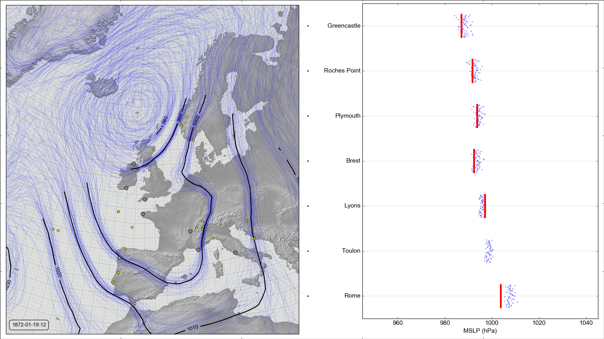

20CR2c compared with new observations in January 1872¶
Compare
| 20CR2c | January 1872 | Spring 1903 | February 1953 |
| 20CR3 | January 1872 | Spring 1903 | February 1953 |
| CERA-20C | Spring 1903 | February 1953 |

{kind=link}
MSLP contours (left) and at the new station locations (right)
Left panel is a spaghetti-contour plot of reanalysis mean-sea-level pressure. The small yellow dots mark stations assimilated by the reanalysis; the larger grey dots mark the new stations used for validation.
Right panel shows the observed MSLP (red line) and the reanalysis ensemble values (blue dots) at the station location, for each new station.
Download the data (uses this script)
#!/bin/sh
../../../scripts/get_data.py --reanalysis=20cr2c --start="1872010118" --end="1872013118"
Make the figure (uses this script)
#! /bin/ksh
../../../scripts/scatter+contour.py --year=1872 --month=1 --day=19 --hour=12 --opdir=. --reanalysis=20cr2c --skip=ABERDEEN --skip=LISBON --skip=ROCHEFORT --skip=DIYARBAKIR --skip=BAGHDAD --skip=BASRA